Front Door: Service and Repair
Disassembly1. Remove the inside door handle trim plate cap.
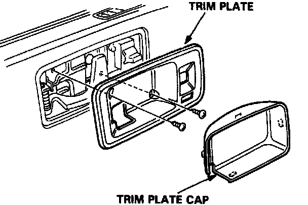
2. Remove the trim plate screws, then carefully remove the trim plate.
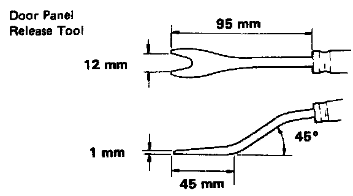
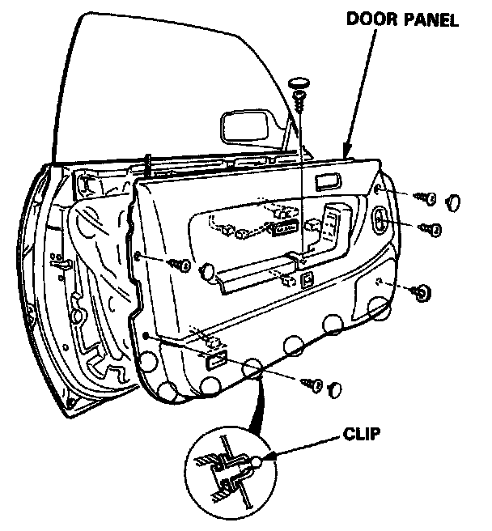
3. Remove the armrest screw and 6 door panel screws, then pry apart the door panel clips.
Lift the door panel straight up off the sill, and disconnect the opener switch, courtesy light, power window and power seat memory switch wires.
NOTE: The armreset and door pocket are removed with the door panel.
4. Remove the armrest, door pocket, power window switch, speaker and courtesy light, from the door panel as required.
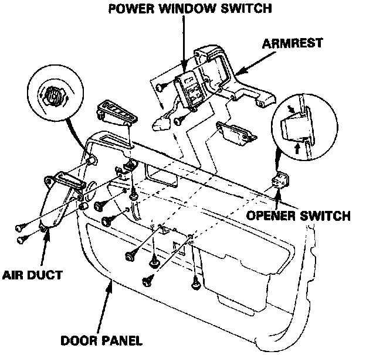
5. Remove the retainer, then remove the trunk lid opener switch.
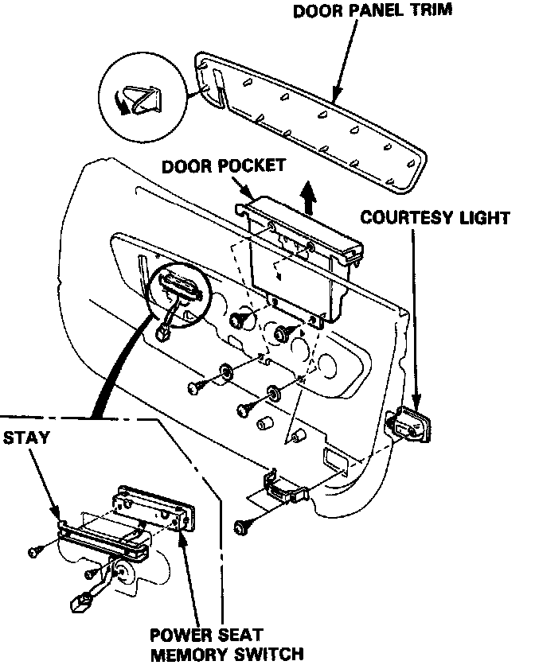
6. Remove the screws, then remove the power seat memory switch.
7. Remove the screws, then remove the power window controller and door panel bracket.
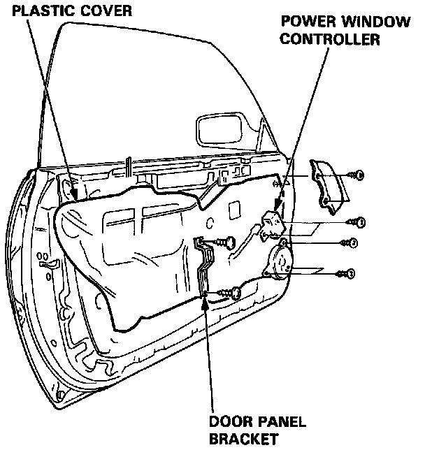
8. Carefully remove the plastic cover.
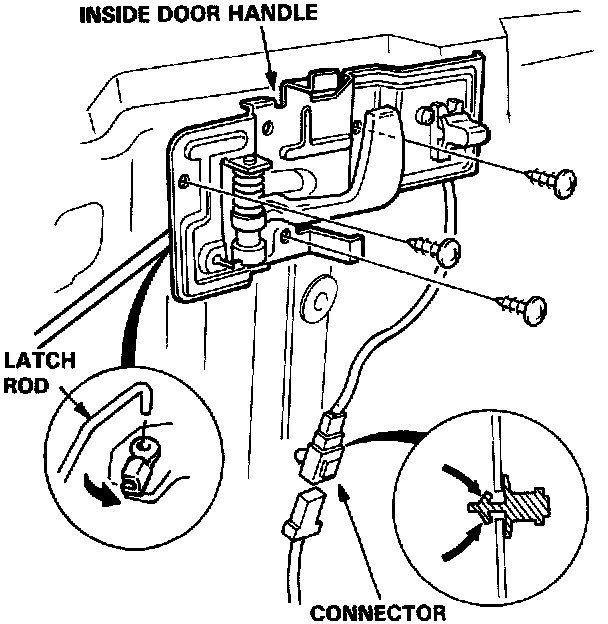
9. Remove the 3 screws, disconnect the connector and the latch rod, then remove the inside door handle.
NOTE: The connector is attached to the door with a clip, so press the clip protrusions together from the rear and push the connector out.
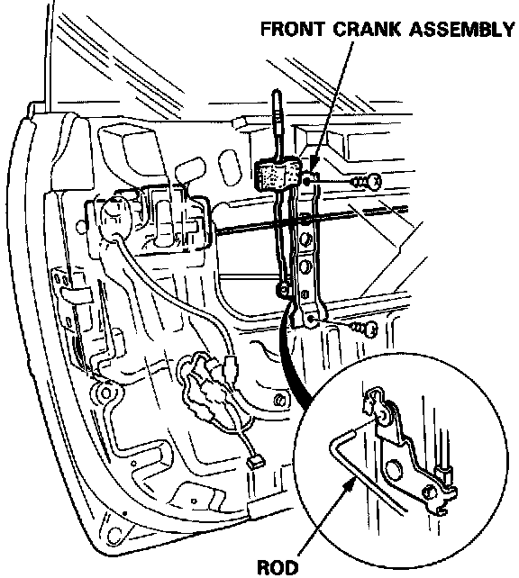
10. Remove the 2 screws, disconnect the rod, then remove the front crank assembly.
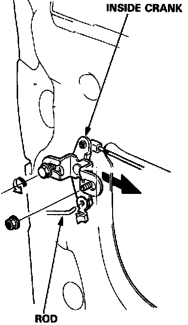
11. Remove the nut and loosen the bolt, disconnect the rods, then remove the inside crank.
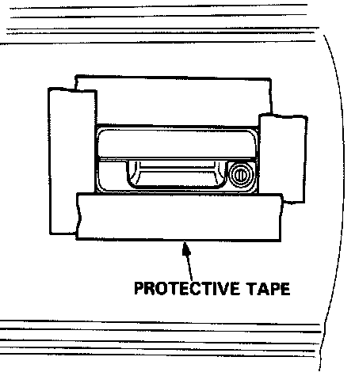
12. Use protective tape around the edge of the door handle to prevent scratching the paint.
13. Re-connect the window switch or a 12V battery to operate the window regulator.
14. Roll up the window fully.
15. Disconnect the outside door handle coupler and latch assembly coupler.
16. Pry the door handle latch rod out of its joint using a flat screwdriver.
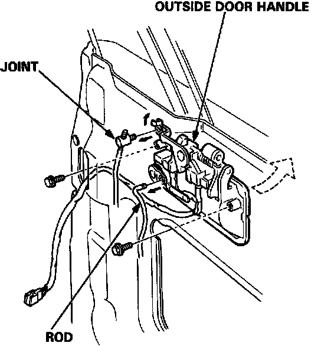
17. Remove the 2 bolts, then remove the outside door handle.
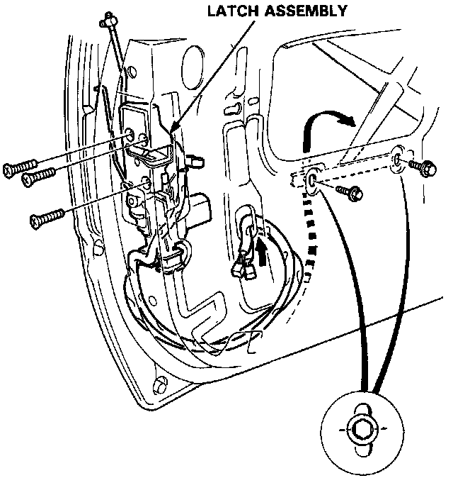
18. Remove the screws and take the latch assembly off the door, then push the latch assembly and rod inside the door.
19. Open the window fully.
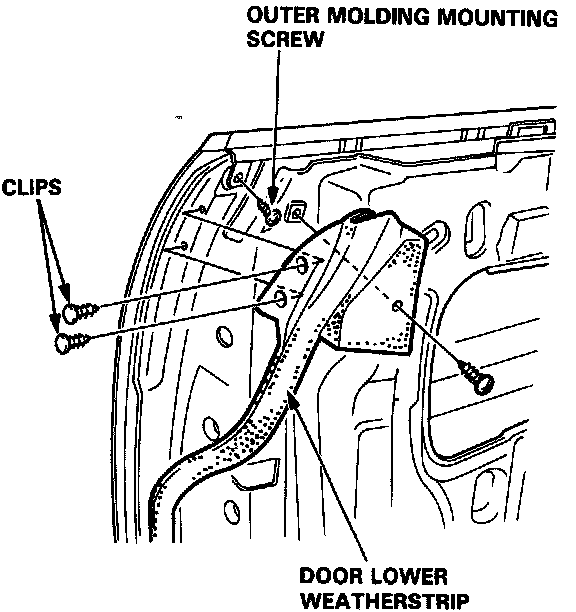
20. First remove the weatherstrip retaining screw and clips, then pull off the weatherstrip.
21. Remove the outer molding mounting screw.
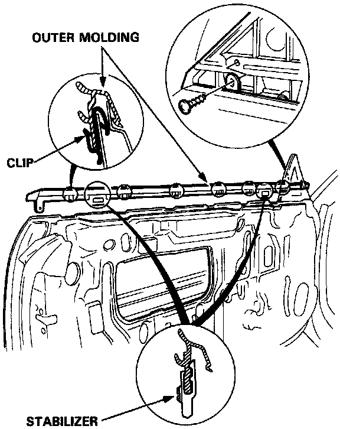
22. Remove the door mirror.
Remove the screw and clips, then remove the outer molding.
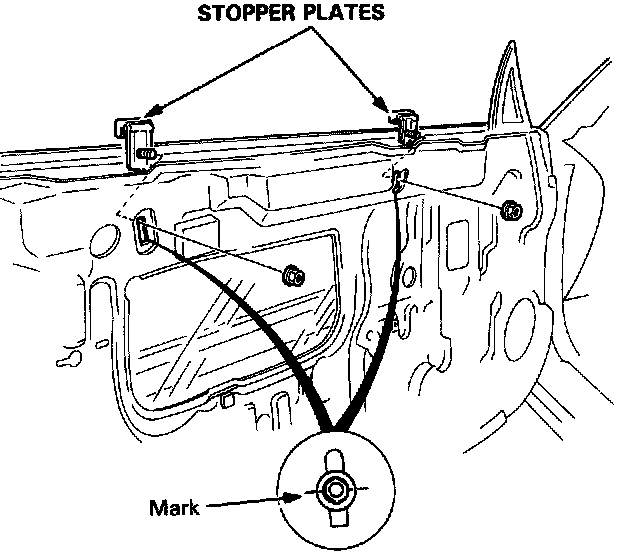
23. Remove the nuts then remove the stopper plates.
NOTE: Scribe a line across the nuts and door to ensure original adjustment.
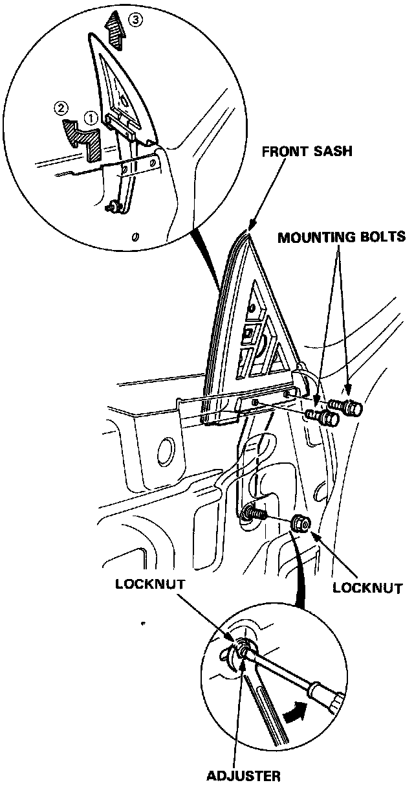
24. Remove the 2 bolts and adjuster locknut, then remove the front sash.
NOTE: Hold the adjuster with a screwdriver when removing the locknut.
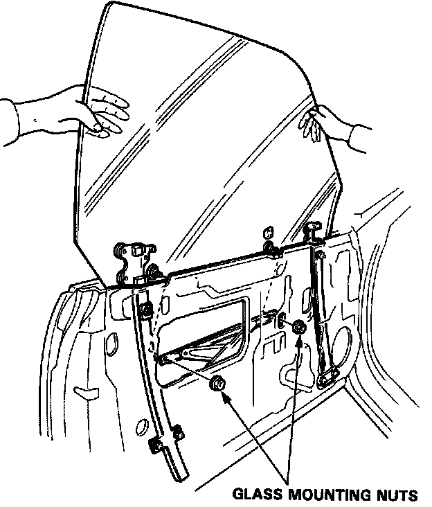
25. Carefully lower the window until you can see its mounting nuts, then loosen the nuts. Pull the window out through the window slot.
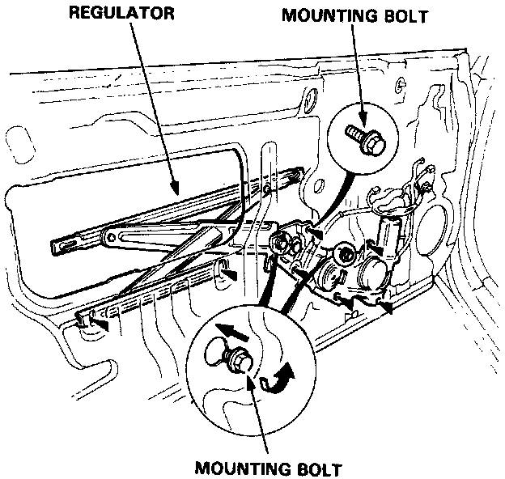
26. Remove the 7 mounting bolts and loosen the 2 motor bolts, then take out the regulator assembly through the center hole in the door.
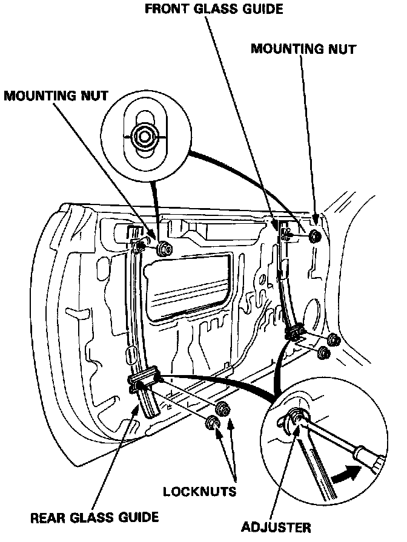
27. Remove the mounting nuts and adjuster locknuts, then remove the front and rear glass guides.
NOTE:
^ Hold the adjusters with a screwdriver when removing the locknuts.
^ Scribe a line across the upper mounting nuts and door to ensure original adjustment.
Assembly
Assemble the door in the reverse order of disassembly, and also:
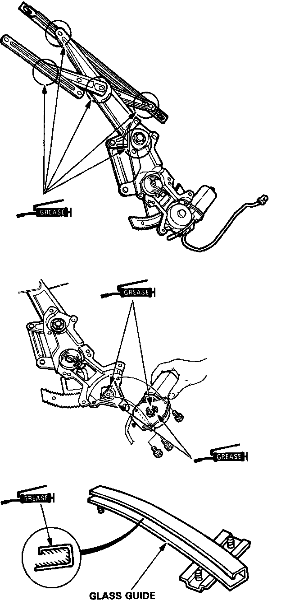
1. Grease all the sliding surfaces of the window regulator where shown.
2. Roll the glass up and down to see if it moves freely without binding.
Also make sure that there is no clearance between the glass and door upper weatherstrip when the glass is closed.
Adjust the position of the door glass as necessary.
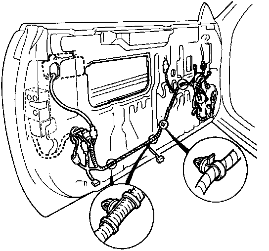
3. Fix the wire harness correctly on the door.
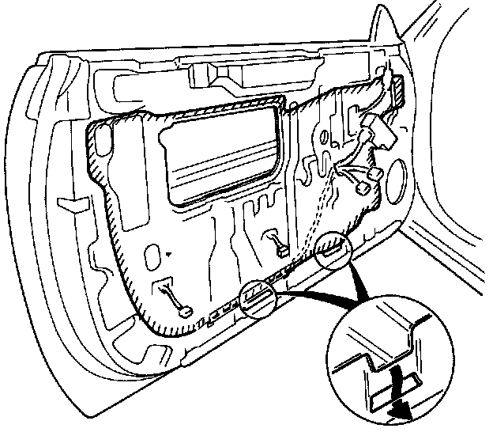
4. When reinstalling the plastic cover, apply adhesive along the edge where necessary to maintain a continuolus seal and prevent air/water leaks.